MAPS: Multiresolution Adaptive Parameterization of Surfaces
Aaron W. F. Lee
Wim Sweldens
Peter Schröder
Lawrence Cowsar
David Dobkin
Abstract:
We construct smooth parameterizations of
irregular connectivity triangulations of arbitrary genus
2-manifolds. Our algorithm uses hierarchical
simplification to efficiently induce a parameterization of
the original mesh over a base domain consisting of a small number of
triangles.
This initial parameterization is further improved through a
hierarchical smoothing procedure based on Loop subdivision applied
in the parameter domain. Our
method supports both fully automatic and user constrained
operations. In the latter, we accommodate point and edge constraints
to force the alignment of iso-parameter lines with desired features. We
show how to use the parameterization for fast, hierarchical
subdivision connectivity remeshing with guaranteed error bounds. The
remeshing algorithm constructs an adaptively subdivided mesh directly
without first resorting to uniform subdivision followed
by subsequent sparsification. It thus avoids the
exponential cost of the latter. Our parameterizations are also
useful for texture mapping and morphing applications, among others.
Status:
Computer Graphics Proceedings (SIGGRAPH 98), pp. 95-104, 1998.
BiBTeX entry:
@article{lsscd:sig98,
author = {A. W. F. Lee and W. Sweldens and P. Schr{\"o}der
and L. Cowsar and D. Dobkin},
title = {MAPS: Multiresolution Adaptive Parameterization of Surfaces},
journal = {Computer Graphics Proceedings (SIGGRAPH 98)},
pages = {95-104},
publisher = {ACM Siggraph},
year = {1998}
}
Files:
Compressed PostScript with images (4.8M
expands to 32M),
PDF v3.0 with images (840K),
PostScript without images (107K).
Note:
Aaron Lee wrote a very nice and easy to read article on MAPS in Gamasutra,
the online game developers magazine.
Images and captions:
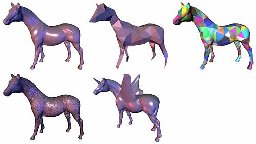
Figure 1: Overview of our algorithm. Top left: a scanned input
mesh (courtesy Cyberware). Next the parameter or base domain,
obtained through mesh simplification. Top right: regions of the
original mesh colored according to their assigned base domain
triangle. Bottom left: adaptive remeshing with subdivision
connectivity (ε=1%).
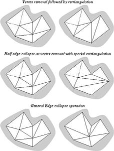
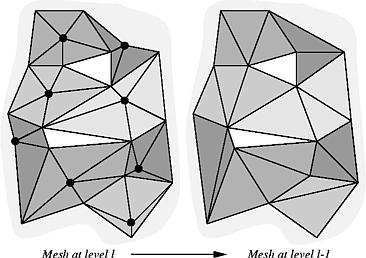
Figure 2-3: Left: Examples of different atomic mesh simplification
steps. At the top vertex removal, in the middle half-edge
collapse, and edge collapse at the bottom.
Middle: A mesh with a maximally independent set
of vertices marked by heavy dots. Each vertex in the independent set
has its respective star highlighted. Note that the star's of
the independent set do not tile the mesh (two triangles are left
white). Right: Retriangulation after vertex
removal.
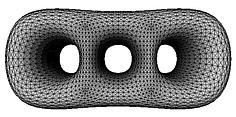
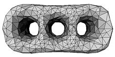

Figure 4: Example of a modified DK mesh hierarchy. At the left
the finest (original) mesh followed by an intermediate mesh, and the
coarsest (base) mesh at the right (original dataset courtesy
University of Washington).
 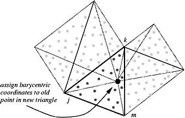
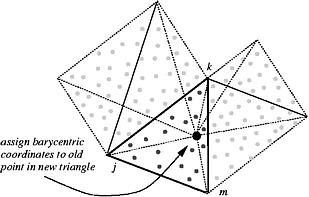
Figure 5-6: In order to remove a vertex pi, its
star(i) is mapped from 3-space to a plane using the map
za. In the plane the central vertex is removed and the
resulting hole retriangulated (bottom right).
After retriangulation of a hole in the plane (left),
the just removed vertex gets assigned barycentric
coordinates with respect to the containing triangle on the coarser
level (right). Similarly, all the finest level vertices that were mapped to
a triangle of the hole now need to be reassigned to a triangle of the
coarser level.
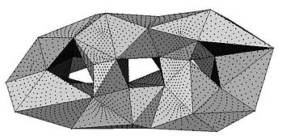
Figure 7: Base domain. For each point pi from the
original mesh, its mapping Π(pi) is shown with a dot on
the base domain.
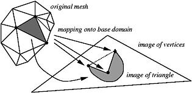
Figure 8: Although the mapping Π from the original mesh to a
base domain triangle is a bijection, triangles do not in general get
mapped to triangles. Three vertices of the original mesh get mapped
to a concave configuration on the base domain, causing the piecewise
linear approximation of the map to flip the triangle.
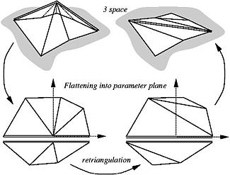
Figure 9: When a vertex with two incident feature edges is
removed, we want to ensure that the subsequent retriangulation adds a
new feature edge to replace the two old ones.
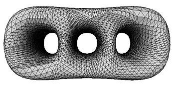
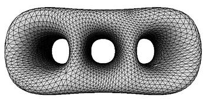
Figure 10-11: Left: Remeshing of 3 holed torus using midpoint
subdivision. The parameterization is smooth within each base domain
triangle, but clearly not across base domain triangles.
Right: The same remeshing of the 3-holed torus,
but this time with respect to a Loop smoothed
parameterization. Note: Because the Loop scheme only enters in
smoothing the parameterization the surface shown is still a
sampling of the original mesh, not a Loop surface
approximation of the original.
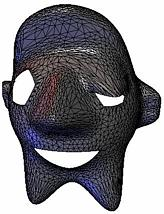
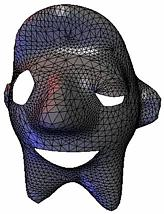
Figure 12: Example remesh of a surface with boundaries.
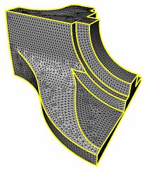
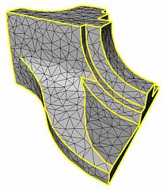
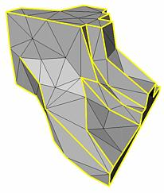
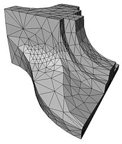
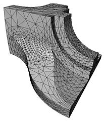
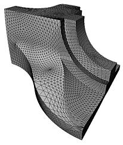
Figure 13: Top (left to right): three levels in the DK
pyramid, finest (L=15) with 12946, intermediate (l=8) with 1530, and
coarsest (l=0) with 168 triangles. Feature edges, dart and corner
vertices survive on the base domain. Bottom (left to right): adaptive
mesh with &\epsilon; = 5% and 1120 triangles (left), &\epsilon; = 1% and
3430 triangles (middle), and uniform level 3 (right). (Original dataset
courtesy University of Washington.)
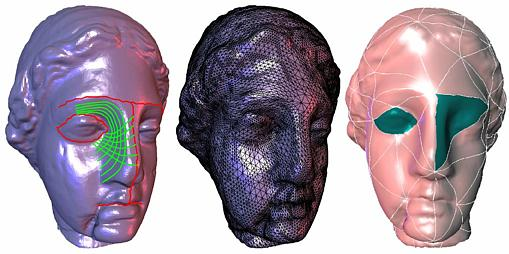
Figure 14: Example of a constrained parameterization based on
user input. Top: original input mesh (100000 triangles) with edge
tags superimposed in red, green lines show some smooth iso-parameter
lines of our parameterization. The middle shows an adaptive
subdivision connectivity remesh. The bottom one patches corresponding
to the eye regions (right eye was constrained, left eye was not) are
highlighted to indicate the resulting alignment of top level patches
with the feature lines. (Dataset courtesy Cyberware.)
Copyright © 1998 Aaron Lee, Wim Sweldens, Peter Schröder,
Lawrence Cowsar, David Dobkin.

 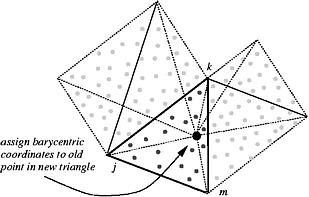
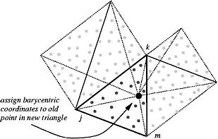